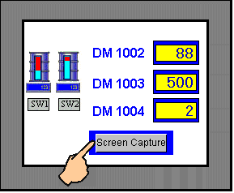
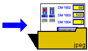
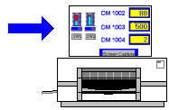

Screen Snapshot enables you to take a snapshot of the target machine's screen during run time and store it in .jpeg format or print it.


Saving Screen Snapshots to File

Printing Screen Snapshots